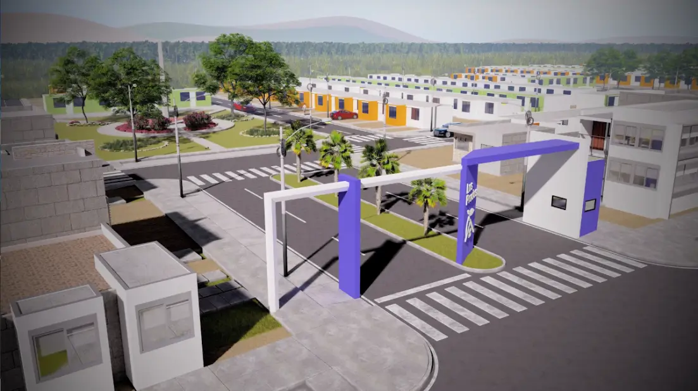

<div class="relative isolate overflow-hidden bg-[#737373] py-24 sm:py-32 h-full">
    <!-- Imagen de fondo con brillo y escala de grises -->
    
    
    <!-- Primer gradiente con desenfoque -->
    <div class="hidden sm:absolute sm:-top-10 sm:right-1/2 sm:-z-10 sm:mr-10 sm:block sm:transform-gpu sm:blur-3xl" aria-hidden="true">
      <div class="aspect-[1097/955] w-[68.5625rem] bg-gradient-to-tr from-[#68248f] to-[#5369e1] opacity-20" style="clip-path: polygon(74.1% 44.1%, 100% 61.6%, 97.5% 26.9%, 85.5% 0.1%, 80.7% 2%, 72.5% 32.5%, 60.2% 62.4%, 52.4% 68.1%, 47.5% 58.3%, 45.2% 34.5%, 27.5% 76.7%, 0.1% 64.9%, 17.9% 100%, 27.6% 76.8%, 76.1% 97.7%, 74.1% 44.1%)"></div>
    </div>
  
    <!-- Segundo gradiente con desenfoque -->
    <div class="absolute -top-52 left-1/2 -z-10 -translate-x-1/2 transform-gpu blur-3xl sm:top-[-28rem] sm:ml-16 sm:translate-x-0 sm:transform-gpu" aria-hidden="true">
      <div class="aspect-[1097/945] w-[68.5625rem] bg-gradient-to-tr from-[#e6ccf6] to-[#a39feb] opacity-20" style="clip-path: polygon(74.1% 44.1%, 100% 61.6%, 97.5% 26.9%, 85.5% 0.1%, 80.7% 2%, 72.5% 32.5%, 60.2% 62.4%, 52.4% 68.1%, 47.5% 58.3%, 45.2% 34.5%, 27.5% 76.7%, 0.1% 64.9%, 17.9% 100%, 27.6% 76.8%, 76.1% 97.7%, 74.1% 44.1%)"></div>
    </div>
  
    <!-- Texto centrado -->
    <div class="w-full h-full flex justify-center items-center">
      <h1 class="font-medium text-white !text-[1.5rem] md:!text-[3rem]">Próximamente</h1>
    </div>
  </div>